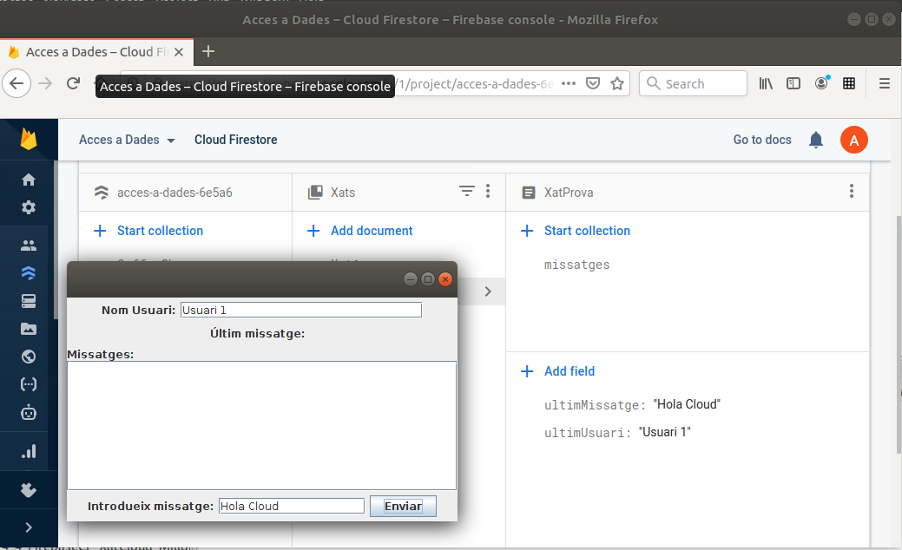
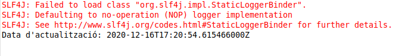
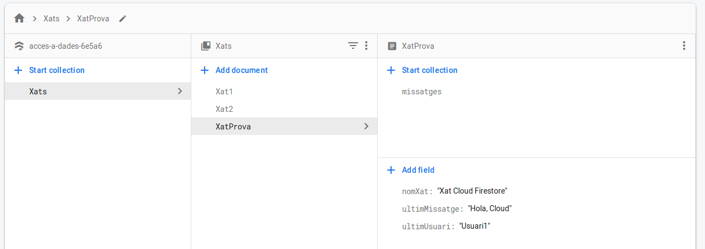
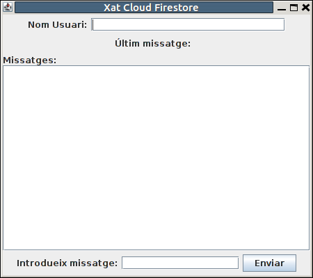
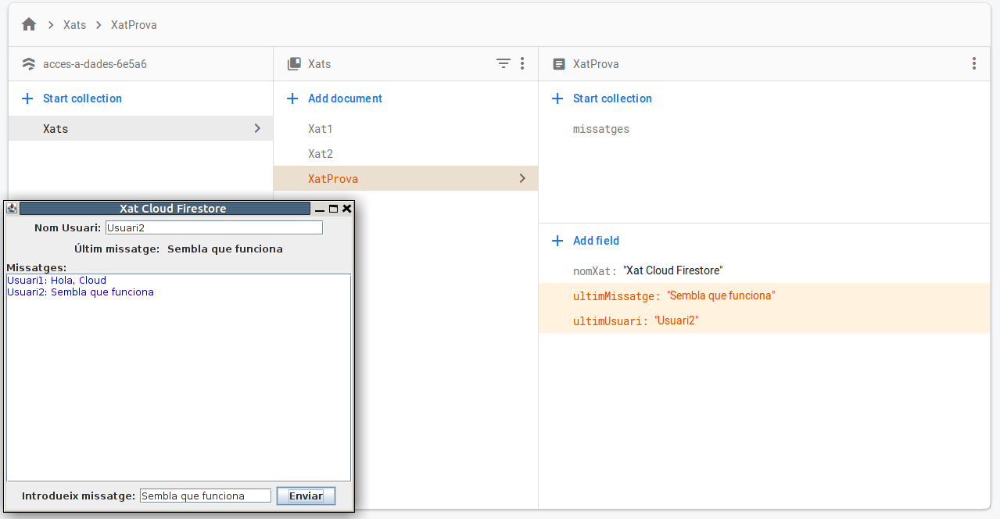
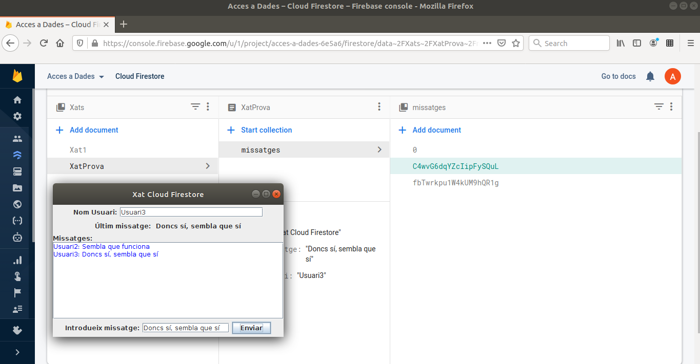
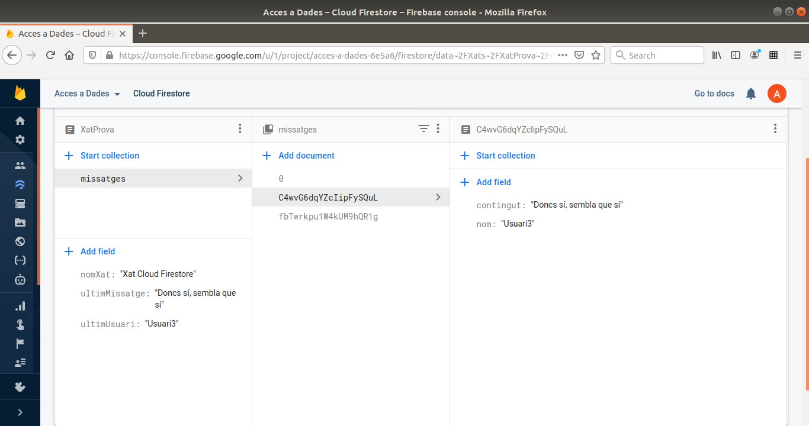
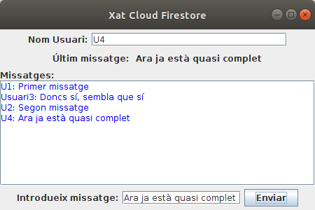

4.2.2 CF-IntelliJ: Accés a les dades
Guardar dades
Com acabem de comentar, accedim a tot un document dins d'una col·lecció.
Per a guardar dades, ens podem plantejar 3 operacions d'escriptura sobre el document:
- Sobreescriure'l tot: ho farem amb el mètode set()
- Esborrar-lo tot: amb el mètode delete()
- Modificar-lo: amb el mètode update()
Excepte per esborrar, per a les altres operacions ens fa falta saber l'estructura del document. Per això tant mètode set() com el mètode update() accepten com a paràmetre no una única dada, sinó una estructura que puga arribar a reflectir el document. Acceptaran com a paràmetre un Map<String, Object>, on podrem col·locar les claus i els valors de tots els membres del document. Cada valor pot ser dels tipus que vam practicar en el punt anterior: string, number, boolean, array, map, ...
La manera de col·locar un element en una estructura Map<> és amb el mètode put(), que acceptarà dos paràmetres: la clau i el valor.
En el següent exemple. quan s'apreta el botó d'enviar (baix a la dreta) es guardarà el contingut del quadre de text usuari que està dalt i el de missatge que està baix. Però observeu que estem utilitzant el mètode set() i per tant matxacaríem el que ja teníem construït (el nom del xat i potser també la subcol·lecció de missatges). Per tant US ACONSELLE QUE NO EXECUTEU EL QUE VE A CONTINUACIÓ
// Exemple de guardar dades en Cloud Firestore
// Per a guardar dades. Sobre /Xats/XatProva i després sobre /Xats/Xat1
fun enviar() {
val database = FirestoreClient.getFirestore()
val docXatProva = database.collection("Xats").document("XatProva")
val dades = HashMap<String, Any>()
dades.put("ultimUsuari", usuari.getText())
dades.put("ultimMissatge", missatge.getText())
docXatProva.set(dades)
}Aquest seria el resultat, creant-se el document amb les 2 clau-valor, i havent matxacat el que hi havia, que era el nom del xat. Afortunadament no s'ha carregat la col·lecció missatges, però no ens podem fiar

En realitat els mètodes set(), delete() i update() tornen un valor, que és un ApiFuture<WriteResult>, que permet averiguar com ha anat l'actualització de les dades. D'aquest ApiFuture<> podem obtenir el moment en què s'ha confirmat l'actualització, i es podria aprofitar per a tractar-lo per si dóna algun error.
Ampliem l'exemple anterior en què utilitzàvem el set() per a comprovar el que comentem, senzillament mostrant el moment en què s'ha actualitzat, i poder comprovar que és un ApiFuture<WriteResult> . US ACONSELLE QUE NO EXECUTEU EL QUE VE A CONTINUACIÓ
// Exemple de guardar dades en Cloud Firestore
// Per a guardar dades. Sobre /Xats/XatProva i després sobre /Xats/Xat1
fun enviar() {
val database = FirestoreClient.getFirestore()
val docXatProva = database.collection("Xats").document("XatProva")
val dades = HashMap<String, Any>()
dades.put("ultimUsuari", usuari.getText())
dades.put("ultimMissatge", missatge.getText())
val result = docXatProva.set(dades)
println("Data d'actualització: " + result.get().getUpdateTime())
}
Si veiem la consola d'eixida d'IntelliJ veurem després dels warnings de sempre, al final en negre com ha imprés el moment de la confirmació.

En els exemples anterior, en cas d'haver-se executat hauran matxacat el document XatProva i això era per haver utilitzat el mètode set() .
Anem a canviar-lo pel mètode update(), en què senzillament afegirà (i si és necessari matxacarà) les dades que proporcionem, però mantindrà les altres. AQUEST EXEMPLE SÍ QUE EL PODEU FER
// Exemple de guardar dades en Cloud Firestore // Per a guardar dades. Sobre /Xats/XatProva i després sobre /Xats/Xat1 fun enviar() { val database = FirestoreClient.getFirestore() val docXatProva = database.collection("Xats").document("XatProva") val dades = HashMap<String, Any>() dades.put("ultimUsuari", usuari.getText()) dades.put("ultimMissatge", missatge.getText()) docXatProva.update(dades) }
conservarem tant el camp nomXat com la col·lecció missatges
Recuperar dades
Com en el cas del Realtime Database, ens plantegem dos casos:
- Una única lectura
- Un listener que es quede escoltant per si hi ha canvis
Com comprovarem, queda més senzilla la lectura única en el cas de Cloud Firestore.
Lectura única
Per a fer una lectura única utilitzarem el mètode get() sobre una referència al document que volem llegir. El resultat ens ve en un ApiFuture<DocumentSnapshot>, que com es veu és una còpia de les dades en una interface ApiFutute, indicant que la tindrem disponible en un futur. Sobre aquesta farem get() per a obtenir aquesta còpia (serà un objecte). I sobre ella podrem fer:
- getData() per a obtenir tot el document en un Map<String,Object>
- getId() per a obtenir el nom del document
- get(nomClau) per a obtenir directament el valor d'una clau del document
- getString(nomClau) per a obtenir el valor de la clau en forma de string
- getDouble(nomClau) per a obtenir el valor de la clau en forma de double
- getDate(nomClau) per a obtenir el valor de la clau en forma de date
- ...
L'exemple d'única lectura el farem per a posar el títol de l'aplicació, com en l'exemple del Realtime Database. Prèviament, des de la consola de Firebase ja havíem creat la parella clau-valor: nomXat: Xat Cloud Firestore, dins del document XatProva. Si pels exemples anteriors (els que havia marcat en roig que no us aconsellava fer) heu perdut aquesta parella, és el moment de crear-la de nou:

Ara sí que haurem d'anar amb compte en el moment de guardar les dades. Si utilitzem el mètode set() matxacarem el document anterior (amb el nom del xat). Per tant, a partir d'ara ens convindrà utilitzar el mètode update(). Ho tornarem a especificar en el moment de fer aquesta escriptura.
I aquestes seran les sentències per a posar el títol de l'aplicació:
// Exemple de lectura única: senzillament sobre un ApiFuture i sobre ell get()
// Per a posar el títol. Sobre /Xats/XatProva/nomXat
val database = FirestoreClient.getFirestore()
val docRef = database.collection("Xats").document("XatProva")
val future = docRef.get()
val nomXat = future.get().getString("nomXat")
this.setTitle(nomXat)
I ací tenim el resultat, on es veu el títol agafat de Cloud Firestore:

Listener que es queda escoltant: addSnapshotListener()
De forma paral·lela al Realtime Database, si volem rebre una notificació de quan hi haja un canvi en el document que ens interessa, sobre una referència a aquest document ens muntarem un listener, en aquest cas amb el mètode addSnapshotListener(). Al mètode onEvent() que s'ha de sobreescriure arribarà un paràmetre de tipus DocumentSnapshot, que serà una còpia del document. Com en el cas anterior podrem fer sobre ell un getData() per a obtenir tot el document, getString(nomClau) per a obtenir el valor de la clau com un string, etc.
En el nostre exemple, de moment l'utilitzem tant per a posar l'últim missatge com per a anar omplint l'àrea central amb el xat. Però com havíem comentat abans, hem de cuidar de no matxacar tot el document per a no perdre el títol del xat. Per tant, l'acció que farem en apretar el botó per a enviar el missatge no serà set() sinó update(). Per si de cas havíeu fet els exemples que us havia aconsellat que no féreu, ací teniu una altra vegada el codi correcte:
// Exemple de guardar dades en Cloud Firestore
// Per a guardar dades. Sobre /Xats/XatProva i després sobre /Xats/Xat1
fun enviar() {
val database = FirestoreClient.getFirestore()
val docXatProva = database.collection("Xats").document("XatProva")
val dades = HashMap<String, Any>()
dades.put("ultimUsuari", usuari.getText())
dades.put("ultimMissatge", missatge.getText())
docXatProva.update(dades)
}I ara sí el addSnapshotListener():
// Exemple de listener de lectura contínua addSnapshotListener()
// Per a posar l'últim missatge registrat. Sobre /Xats/XatProva/ultimUsuari i /Xats/XatProva/ultimMissatge DocumentSnapshot FirestoreException
docRef.addSnapshotListener { snapshot, e ->
if (e != null) {
System.err.println("Listen failed: " + e)
return@addSnapshotListener
}
if (snapshot != null && snapshot.exists()) {
ultimMissatge.setText(snapshot.getString("ultimMissatge"))
area.append(snapshot.getString("ultimUsuari") + ": " + snapshot.getString("ultimMissatge") + "\n")
} else {
println("Current data: null")
}
}En aquest exemple tenim el tractament de possibles errors, com que no s'accedeix al document, o aquest és nul.
Observeu com la primera lectura també la fa, del que hi haja guardat en un principi. En la imatge es mostra el moment d'afegir un segon missatge:

Guardar documents
Ja havíem comentat en la pregunta 4.1 que per l'estructura de les dades a la qual ens convida Cloud Firestore, en compte de guardar els missatges (i l'usuari) en una llista, ho faríem en documents dins d'una subcol·lecció.
Per tant ens és necessària l'operació d'afegir un document a una col·lecció. Això en un principi ho aconseguiríem amb el mètode set() sobre un document nou de la col·lecció:
database.collection("nomCol").document("nomDoc").set(dades)però això ens obligaria a posar un nom a cada document. Ja havíem vist que Cloud Firestore era capaç de generar un nom de document que no es puga repetir. Des de Kotlin s'aconsegueix amb el mètode add():
database.collection("nomCol").add(dades)però que en el nostre cas, per ser una subcol·lecció és un poc més llarg
database.collection("Xats").document("XatProva").collection("missatges").add(dades)L'estructura de les dades la podem fer amb un Map<String,Object>, i posar-li en el nostre cas l'usuari i el missatge. D'aquesta manera ens quedaria ara el procediment en apretar el botó d'enviar el missatge, on a banda del que teníem abans per a modificar ultimMissatge i ultimUsuari, ara afegirem el document nou.
// Exemple de guardar dades en Cloud Firestore
// Per a guardar dades. Sobre /Xats/XatProva i després sobre /Xats/Xat1
fun enviar() {
val database = FirestoreClient.getFirestore()
val docXatProva = database.collection("Xats").document("XatProva")
val dades = HashMap<String, Any>()
dades.put("ultimUsuari", usuari.getText())
dades.put("ultimMissatge", missatge.getText())
docXatProva.update(dades)
val dades2 = HashMap<String, Any>()
dades2.put("nom", usuari.getText())
dades2.put("contingut", missatge.getText())
database.collection("Xats").document("XatProva").collection("missatges").add(dades2)
}
I aquest és el resultat

Per cert, un detall que haurem de tenir en compte més avant: com que el número de document és aleoatori, no té per què ser l'últim. Ho haurem de tenir en compte quan vulguem traure els missatges per ordre cronològic.
Però sí que podem veure com el contingut del nou document és el que volíem:

Recuperar documents modificats
Ja només ens queda detectar els canvis en els documents de la col·lecció, per a afegir a l'àrea central els documents afegits. També és un addSnapshotListener(), però ara l'apliquem a una col·lecció (no a un document). El resultat és que d'una forma molt còmoda podrem detectar els documents afegits, els modificats i fins i tot els esborrats.
En el nostre exemple només ens interessa el cas de document afegit, que serà un nou missatge en el xat, i el que farem serà afegir a area (el JTextArea on visualitzem tota a conversa). Per tant ens sobrarà la línia area.append(...) que estarà al voltant de la línia 106, en la qual afegíem a area depenent del canvi en ultimMissatge
Ací tenim el fragment de programa que ens ho permetrà. Hem deixat els casos de document modificat i document esborrat per a una millor documentació, encara que en el nostre exemple no ho utilitzem.
// Exemple de listener de lectura contínua addSnapshotListener() sobre una col·lecció
// Per a posar tota la llista de missatges. Sobre /Xats/XatProva/missatges
database.collection("Xats").document("XatProva").collection("missatges").addSnapshotListener { snapshots, e ->
if (e != null) {
System.err.println("Listen failed: " + e)
return@addSnapshotListener
}
for (dc in snapshots!!.getDocumentChanges()) {
when (dc.getType()) {
DocumentChange.Type.ADDED ->
area.append(dc.getDocument().getString("nom") + ": " + dc.getDocument().getString("contingut") + "\n")
DocumentChange.Type.MODIFIED ->
println("Missatge modificat: " + dc.getDocument().getData());
DocumentChange.Type.REMOVED ->
println("Missatge esborrat: " + dc.getDocument().getData());
}
}
}I en aquesta imatge es veu com en un principi es veuen els 3 documents que ja existien (2 creats en la pregunta 4.1, i 1 immediatament abans). També s'afegeix un altre missatge per veure que es visualitza perfectament

És de destacar que ara la còpia de les dades, el snapshot, és en realitat un QuerySnapshot. I és que nosaltres no hem fet cap consulta sobre els documents de la col·lecció, però és possible fer-la. Per exemple es podria seleccionar per mig d'una query tots els documents en què l'usuari és un determinat. Aleshores detectaríem els documents afegits, modificats o esborrats d'aquest usuari. Ho faríem en el moment de declarar el addSnapshotListener():
database.collection("Xats").document("XatProva").collection("missatges").whereEqualTo("usuari","Usuari2").addSnapshotListener {O també podríem ordenar els documents per algun camp. Açò en realitat és necessari per a poder ordenar els missatges, ja que el nom del document auto-generat per Cloud Firestore no és consecutiu, sinó aleatori, i per tant com ja hem vist un document nou pot tenir un nom anterior a alguns dels existents. Ho arreglarem fàcilment posant un camp més amb la data i ordenant per aquest camp amb orderBy() (que aniria en el lloc del whereEqualTo() de la sentència anterior).
Llicenciat sota la Llicència Creative Commons Reconeixement NoComercial SenseObraDerivada 4.0